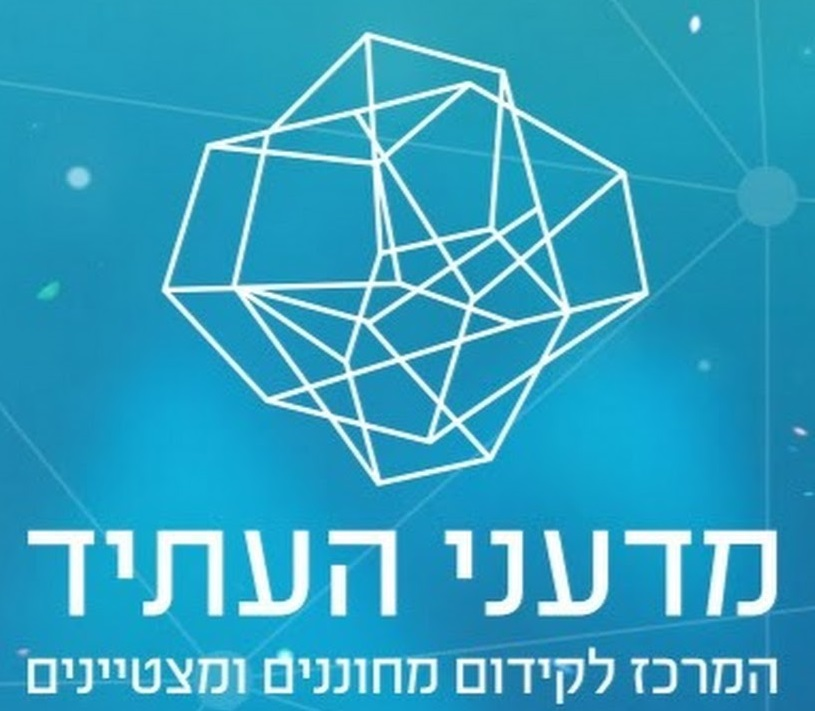
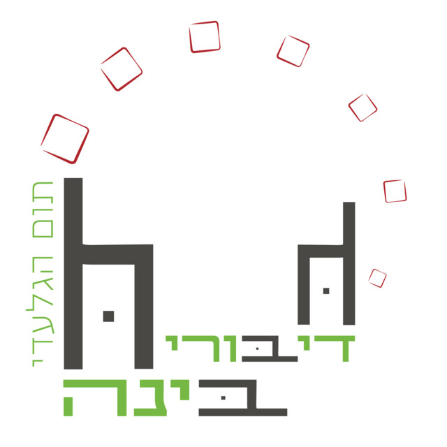
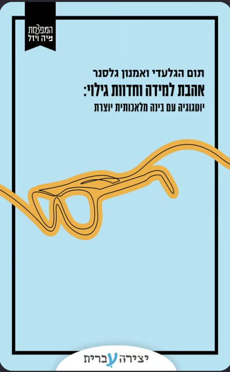

ג'מיני כסביבת עבודה - מצגת הסדנה
ג'מיני כסביבת עבודה
שיחה, קנבס, נוטבוק וג'ם - במקום אחד
המכללה האקדמית צפת
יום ראשון, 4.10.2026
תום הגלעדי
קצת עליי
- עשרים שנה כאיש חינוך, חלקן בניהול מערכות חינוך: הקמה וניהול בית ספר, סגן מנהל פסג"ה תל אביב-יפו, אחראי פן חברתי-רגשי במדעני העתיד
- שלוש השנים האחרונות: רק הממשק שבין בינה מלאכותית לארגוני למידה והוראה - משרד החינוך, האקדמיה, וליווי התייעלות במגזר העסקי
- מנחה הפודקאסט "דיבורי בינה", מנהל קהילת "בינה מלאכותית בחינוך ובאקדמיה" בפייסבוק, וכותב יחד עם פרופ' אמנון גלסנר את הספר "אהבת למידה וחדוות גילוי"
- מלווה את הסגל של המכללה האקדמית צפת מאז 2024






עם מה יוצאים היום
ג'ם אישי אחד, שמכיר את הקורס שלכם/ן
מוכן לשבוע הראשון של הסמסטר.
ובדרך: טיוטה בקנבס
מטלה או מתווה שיעור, על הסילבוס האמיתי שלכם/ן.
על השולחן: מחשב, חשבון גוגל, סילבוס, ומטלה או מצגת מהקורס.
מהשאלה הבודדת לסביבת עבודה
"רבים משתמשים בבינה מלאכותית כמו במנוע חיפוש: שאלה, תשובה, סוגרים את החלון."
היום: ארבע קומות, וכל אחת עונה על צורך אחר.
היום עולים קומה אחרי קומה.
לפני שמתחילים: נכנסים לג'מינינתרגל בסדנה
- להיכנס לג'מיני: gemini.google.com
- להתחבר עם חשבון גוגל, ולוודא שהוא מופיע בתמונת הפרופיל.
- לבחור בבורר המודלים את המודל המתקדם, לא את המהיר.
- ללחוץ על הפלוס בשורת הכתיבה, ולבחור קנבס.
הדמיה של שורת הכתיבה של ג'מיני: ללחוץ על הפלוס, ובתפריט שנפתח לבחור קנבס.
גאון על הרצף
הבינה המלאכותית מבריקה, אבל לא מסיקה מסקנות.
היא עושה בדיוק את מה שהיא מבינה שביקשתם/ן.
כשהיא טועה
ברוב המקרים לא היינו מדויקים מספיק.
אין מילות קסם ואין מתכון סודי
פרומפט טוב הוא הסבר ברור ומפורט של התוצאה הרצויה.
התשובה הלא נכונה שלה היא הפידבק שלנו לנסח מחדש.
קנבס
תוצר שעובדים עליו יחד, ולא מתחילים כל פעם מחדש
קנבס: לכתוב יחד עם המודל
- מסמנים קטע ומבקשים לשנות רק אותו - בלי לכתוב הכל מחדש.
- משנים אורך וטון בכפתורים, בלי פרומפט.
- מייצאים למסמך גוגל בלחיצה, וממשיכים משם כרגיל.
הדמיה של קנבס: השיחה מימין, המסמך משמאל, ופסקה מסומנת עם בקשה לשנות רק אותה.
התוצר נשאר פתוח לצד השיחה. לא מתחילים כל פעם מחדש.
מטלה מתוך הסילבוס
מצורף הסילבוס של הקורס שלי [שם הקורס].
אני רוצה מטלה אחת לשבוע [מספר], שבודקת הבנה ויישום, ולא שינון.
כתוב אותה בקנבס: הנחיות לסטודנטים ולסטודנטיות, היקף, ומחוון קצר.
אחרי זה נשפר אותה יחד.
תורכם/ן: קנבס על הקורס שלכם/ןנתרגל בסדנה
בונים/ות מה שרוצים/ות. אם צריך נקודת פתיחה, הנה כמה רעיונות:
סיימתם/ן? סימן וי בצ'אט. התבנית לפרומפט - בהנחיות לתרגול.
הפסקה של 10 דקות
נוטבוק: פרויקט שזוכר
- מקום אחד לקורס: מקורות, הנחיות קבועות, וכל השיחות על הקורס.
- ג'מיני זוכר את כל אלה בכל שיחה חדשה בתוך הנוטבוק.
- מסונכרן עם נוטבוק אל-אם: מקור שמוסיפים במקום אחד, מופיע גם בשני.
תרשים: נוטבוק של קורס, ובו מקורות, הנחיות קבועות ושיחות.
הושק במנויים בתשלום. לא רואים את זה בתפריט הצד? זה בסדר - הקומה הבאה פתוחה לכולם.
נוטבוק או ג'ם?
הפרויקט שלי
אני עובד/ת בו לאורך זמן: מוסיף/ה מקורות, ממשיך/ה שיחות.
עוזר עם תפקיד קבוע
אותו דבר בכל פעם, ואפשר גם לשלוח אותו לסטודנטים ולסטודנטיות.
היום בונים ג'ם - כי אותו אפשר לשתף.
ג'ם: עוזר שמכיר את הקורס
פעולה שחוזרת, והתוכן בה משתנה
בוט שנשלח לאחרים
- למי
- מנהלות ומנהלי בתי ספר.
- מה הוא עושה
- שואל שלוש שאלות, ואז מציע עד שלושה צעדים לפיתוח מקצועי של הצוות.
- על מה נשען
- עשרה מסמכי ידע מתוך סקירת מחקר.
ג'ם טוב שואל לפני שהוא עונה.
האנטומיה של ג'ם
- שם - השם שמופיע בראש הבוט.
- תיאור - גלוי גם הוא, ופונה ישירות למשתמשים ולמשתמשות.
- פרומפט בסיס - הכי חשוב: מי הבוט, מה התפקיד שלו, ואיך הוא מתנהג.
- כלי ברירת המחדל - כלי שנפתח אוטומטית, למשל קנבס.
- ידע - המסמכים שהוא קורא.
הדמיה של מסך יצירת ג'ם חדש: שם, תיאור, פרומפט בסיס, כלי ברירת המחדל, ידע, ותצוגה מקדימה.
כתבתם/ן כמה מילים? סמל העט עם הניצוצות בתוך פרומפט הבסיס יהפוך אותן להוראות מלאות. ואז - חובה לעבור עליהן.
מקורות: על מה הבוט נשען
"הבוט טוב בדיוק כמו המקורות שנתתם/ן לו."
- קבצים: סילבוס, מאמרי חובה, מצגות, מטלות. עד עשרה קבצים.
- מחברת של נוטבוק אל-אם כמקור: כל מקורות הקורס במחברת אחת, והבוט נשען על כולם. כך עוקפים את מגבלת עשרת הקבצים.
- ברירת המחדל: הבוט משתמש בקבצים ומצטט מהם, אבל הוא לא מוגבל אליהם.
- "ענה רק מתוך המקורות" בפרומפט הבסיס משפר את הסיכוי, אבל לא מבטיח: הבוט עדיין עלול להשלים מהידע הכללי שלו, או לטעות. לכן - לבדוק.
מי שמקבל את הבוט רואה גם את ההוראות ואת קובצי הידע. לא לשים שם שום דבר חסוי.
רגע לפני: ג'מס הופכים לסקילים
גוגל מחליפה את הג'מס ב"סקילים": הנחיות קבועות שמפעילים בתוך כל שיחה, בהקלדת לוכסן ושם הסקיל.
אז למה ללמוד את זה היום?
מה שנבנה היום לא הולך לפח: כל ג'ם עובר לסקיל אוטומטית, עם הקבצים.
סקיל הוא אותו דבר בפנים - הוראות ומקורות. הכפתור משתנה, החשיבה נשארת.
לבוט שנשלח לסטודנטים ולסטודנטיות, הג'ם הוא עדיין הדרך: שיתוף של סקילים עוד לא זמין.
מקור: דף העזרה הרשמי של גוגל על המעבר מג'מס לסקילים
ג'ם לקורס
אתה עוזר ההוראה של הקורס [שם הקורס], לסטודנטים ולסטודנטיות בשנה [שנה].
התפקיד שלך: לעזור להם להבין את החומר ולהתכונן לשיעורים, לפי הסילבוס שבידע.
שאל לפני שאתה עונה, תן רמזים, ואל תפתור במקומם מטלות.
אם השאלה לא קשורה לקורס, החזר בעדינות לנושא.
כתוב בעברית, בקצרה ובחום.
בדיקה, תיקון, שיתוף
בדיקה
בחלון התצוגה המקדימה, כמו בדיקת תוכנה: ניסיון לשבור אותו.
תיקון
חזרה לפרומפט הבסיס ודיוק שלו - שוב ושוב.
שיתוף
שיתוף ← כל מי שיש לו קישור ← הרשאת צפייה.
שלוש מגבלות שכדאי להכיר
הוא לא נכנס לקישורים שבתוך מסמכים.
אי אפשר לראות מה הסטודנטים והסטודנטיות כתבו לו.
השפה נקבעת בהגדרות הכלליות של גוגל.
תורכם/ן: ג'ם אישי לקורס שלכם/ןנתרגל בסדנה
בונים/ות מה שרוצים/ות. כמה רעיונות, אם צריך נקודת פתיחה:
סיימתם/ן? שלחו בצ'אט את שם הג'ם. התבנית לפרומפט בסיס - בהנחיות לתרגול.
איך בוחרים כלי?
את ההשוואה עשינו בשנה שעברה. היום - לפי מה שעושים:
| אם רוב העבודה שלכם/ן... | כדאי להתחיל עם |
|---|---|
| בתוך גוגל: דרייב, מסמכים, ג'ימייל | ג'מיני |
| כתיבה ארוכה, ועבודה עם מסמכים ארוכים | קלוד |
| שימוש כללי, תמונות, שיחה קולית | צ'אט ג'יפיטי |
מה המכללה מממנת
- סגל בכיר: עד שלושה כלים בשנה, לבחירתכם/ן, מתקציב המחקר (חשבונית והחזר).
- סגל זוטר: כלי אחד בתשלום.
- טיפ: חודש ניסיון לפני מנוי שנתי.
מתחילים בכלי אחד ומעמיקים בו. מנוי שני - כשיודעים בשביל מה.
פרטיות וסודיות: מה מותר?
ההנחיות הן מוסדיות
מה מותר תלוי בחבילה שהמוסד רכש, ובמה שהמכללה אישרה. כדאי לבדוק לפני שמעלים חומרי קורס.
מידע על סטודנטים וסטודנטיות
רק בחשבון מוסדי, ורק אם המוסד אישר אותו לכך.
ומהשנה שעברה: בחשבון פרטי לא מעלים שמות, ציונים או כל פרט מזהה.
מה הלאה
הקלטה ומסמך סיכום
יישלחו לכל מי שנרשם/ה, גם למי שלא הגיע/ה.
ההנחיות לתרגול
נשארות פתוחות. אפשר לחזור אליהן בכל זמן.
הסדנאות הבאות
רביעי 7.10, 12:00
ממתווה למצגת
חמישי 8.10, 16:00
וייב קודינג, למתקדמים/ות
שאלות?
תודה
תום הגלעדי